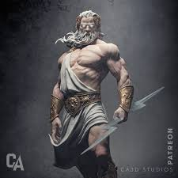
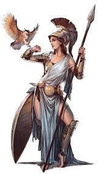

La mitología griega está poblada de dioses poderosos, misteriosos y con personalidades muy humanas. Desde el trono del Monte Olimpo gobernaban los destinos de los mortales y del universo mismo.
Zeus es el rey de los dioses del Olimpo y señor del cielo. Gobernaba con el rayo y era conocido por su poder, sabiduría y también por sus múltiples aventuras amorosas.
Era hijo de Cronos y Rea, y lideró la rebelión contra los titanes para establecer el dominio de los olímpicos.
Además de gobernar el cielo, era el protector de los reyes, la justicia y el orden entre los dioses y los humanos.
Atenea es la diosa de la sabiduría, la estrategia militar y las artes. Nació de la cabeza de Zeus, completamente armada, después de que él se tragara a su madre Metis.
Era una de las deidades más veneradas en la antigua Grecia, especialmente en Atenas, ciudad que lleva su nombre.
Atenea representaba el pensamiento lógico y la sabiduría práctica, y protegía a los héroes como Odiseo y Perseo en sus misiones.